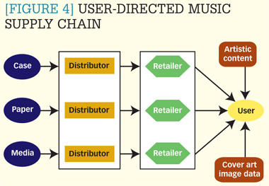
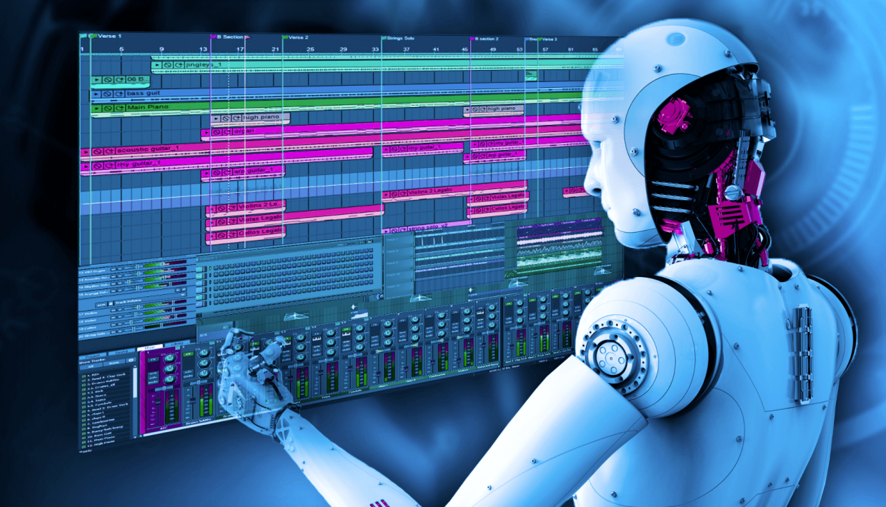

Where could AI Music possibily head to?

There has been quite a hype in AI music generation recently. We have Flow Machines creating their famous song Daddy's Car. We have startups like Amper, Aiva and Jukedeck. We have tech giants like Google Magenta and IBM Watson. We have Taryn Southern (in the picture), composing music using AI. The community is slowly growing and gaining attention from the public.
And some argue that AI music (in acronym, AIM) is a threat to human, as it invades even the artistic sense of human.
My point stands firmly: AI music is NEVER meant to replace human musicians.
In fact, here are a few manifestation of its usage --
1 - To satisfy massive music supply

In places which needs massive music supply, eg. jazz bars, restaurants, BGM for games and short videos, AI could satisfy this massive demand. After all, a jazz musician still needs a rest after 2 hours of improvisation, but AI doesnt need that.
But don't we ever think that the jazz musician will lose his job and be replaced -- in fact, I believe that human music will be elevated and be seen as a more precious type of art as AI music comes in.
It is like economy class and premier class - in the world where we can always listen to AIM everywhere,it should be a more elevating experience when we have a chance to listen to a human musician playing in front of us.
This, brings to my second point.
2 - Setting the baseline
At the stage when AI music is able to satisfy massive music supply, it does convey that AI music has achieved a certain standard. At this point, AIM must have reached a level which the music generated is no longer some geeky passages with malformed chord progressions and awkward tempo, but the music generated is able to serve its purpose as music.
And that is the baseline of music. If a soul-less machine can produce that, human composers must ensure that they provide something of even higher quality. So yes, "Daddy's Car" is a baseline, and melodies generated by Jukedeck shows us the passing mark.
And if we take a step further, the effort to refine AIM is equal to raising the baseline of music-making. One step closer AIM approaches us, we should take two steps further to prove that we are better. I personally think that it forms some kind of drive to push the music industry forward.
Listening to human composed music should be, and must be, a more elevating experience. With AIM setting the baseline, human musicians should try harder to live up to that.
3 - As a tool of inspiration

AI music could inspire thoughts for human musician, showing collaboration for AI and human in music creation. Composers may just need a motive, a short passage, or even some random notes to start with to compose a new song.
Even Jazz was borned in a situation where some strangers in a room each play random melodies to try to "reply" to each other (quoted from the movie La La Land). Who knows that the notes generated by AI could inspire one to compose some totally unexpected styles, genres, or even new music vocabulary, as new music are often being produced under randomness and pure chance.
The ever-winning ground in front of AI
We may have lost to AI in chess, Go, memory, computation, and many others. And we fear that one day, we may lose even more.
But I believe humans still have one thing that could always outperform AI -- which is the artistic sense within us, the ability within us to appreciate and interpret art.
There is still a difference between a piece played by even the finest AI tuned piano and Martha Argerich - it "just is" different, and it can't be explained or understood -- even by human ourselves.
But ironically, everything understandable and explainable for human also gives AI the chance to understand and advance in it -- even things as complex as debating, involving not just language itself but also logic structures, can be understood by AI.
Which means it may precisely be this "un-understandab-ility in art" of us, that distinct us from AI.
AI may mimic the logical process of a debater and construct flawless arguments - but it will never be able to mimic the interpretation of public speaking, the art of persuading one to believe, and the creativity in constructing belief-shattering arguments and viewpoints.
Which is why I believe in today's world, art and humanities is something that should be given even more focus by every single individual, to make us "stay human" and "stay unbeatable".
The world is not just made up of weights and biases, there must be something more. We as humans in this century, who had already been half-slaves to technology, are obliged to try even harder to find out that particular element which makes us who we are.